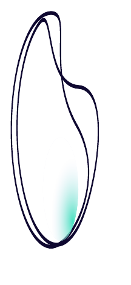
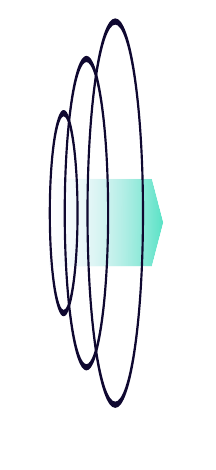
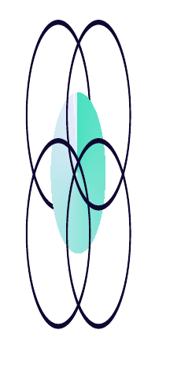
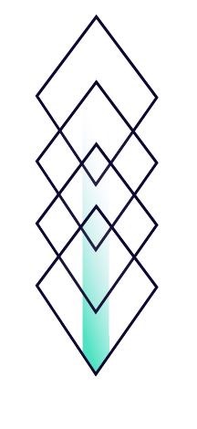
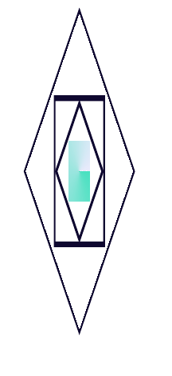
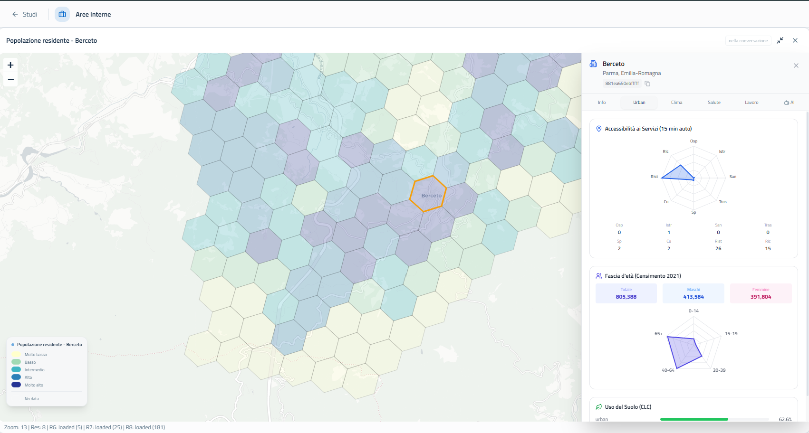
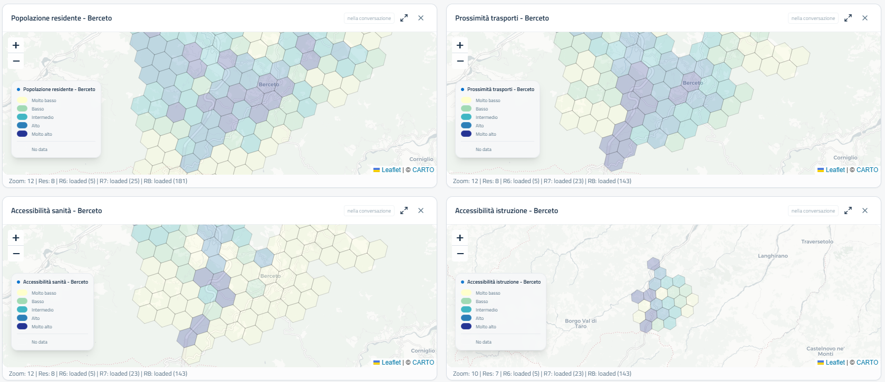

Orientare il futuro
Ridurre i divari è una possibilità che prende forma attraverso le scelte di oggi.
Il futuro non si può improvvisare
Kodak
Il fatturato annuo raggiunse il picco di 16 miliardi di dollari nel 1996; gli utili, 2,5 miliardi nel 1999. Fu tra le prime aziende a brevettare tecnologie per le immagini digitali — e decise di non svilupparle, per non cannibalizzare i profitti dei prodotti analogici.
Lego
Nel 2003 l'azienda è a un passo dalla bancarotta. Decide di istituire un Future Lab, coinvolgendo bambini, progettisti di giocattoli e scrittori di fantascienza.
Il 90% lo fa già
La scienza e l'arte di descrivere, spiegare, esplorare, prevedere e/o interpretare gli sviluppi futuri, nonché di valutarne le conseguenze per le decisioni e le azioni nel presente.
Prevedere il futuro è scientificamente impossibile. Guardare al futuro in modo razionale e scientifico non lo è.
Investire oggi contro un rischio che arriva tra decenni
Il Programma Delta del governo olandese destina 1,4 miliardi di euro, fino al 2034, a opere e manutenzione per mantenere il Paese sicuro, vivibile e prospero. Il livello del mare nei Paesi Bassi potrebbe superare quello attuale, tra 50 e 100 anni, di una misura stimata fra 1 e 5 metri.
Un solo tipo di dato non basta
I metodi di foresight tradizionali rischiano di restare astratti, senza indicazioni chiare per l'azione. La nostra risposta: integrare quattro tipologie di dato.
-

Thick DataStorie, interviste, motivazioni, comportamenti. -
 Big DataDati digitali su larga scala, sensori, tracce online.
Big DataDati digitali su larga scala, sensori, tracce online. -

Forward-Looking DataTrend, scenari, backcasting. -

Participatory DataWorkshop, co-progettazione, hackathon.
Un piccolo comune dell'Appennino, una visione a 30 anni
Una nuova sindaca, eletta con un patto chiaro: non gestire l'ordinario, ma costruire una visione di lungo periodo per la propria comunità di montagna.
- Horizon scanning e framework PESTEL
- Metodo Delphi e assemblee pubbliche
- Futures workshop con cittadini ed esperti
Esito: politiche su lavoro remoto in montagna, coworking ad alta connettività, turismo di rigenerazione. Prima esperienza italiana di questo tipo, con risonanza nazionale.
Chorema non è una dashboard, è un research environment
Si distingue da GIS tradizionali (Esri, QGIS), location intelligence (CARTO) e consulenza (Deloitte, McKinsey) combinando foresight di lungo periodo e intelligenza agentica su indici territoriali validati scientificamente.
Indici validati + intelligenza agentica

80.000+ indicatori geospaziali e 500+ report, da fonti istituzionali e scientifiche.

Sviluppati con Politecnico di Milano, Aalborg University, LUM.
Coordinatore, agenti esperti di dominio, agente critico anti-hallucination.
Stessa domanda, risposte diverse
"In quali provincie la domanda di competenze crescerà di più, e quali corridoi migratori saranno più praticabili nei prossimi anni?"
- Nessun dato realmente granulare
- Fonti generiche o non verificabili
- Nessuna indicazione operativa
- Dati granulari per provincia e orizzonte temporale
- 18 fonti curate e tracciabili
- Indicazioni pienamente azionabili
Berceto, Appennino Parma Est
- Area SNAI — Appennino Parma Est, finanziata ciclo 2021-2027
- Classificazione ISTAT — E, Periferico, 44,7 minuti dal polo urbano
- Popolazione — -25,7% in 30 anni (1991-2021)
- Struttura demografica — over 65 oltre 4 volte gli under 15

Due traiettorie, a partire da oggi

Il trend attuale continua: connettività e telemedicina non arrivano in tempo. La popolazione scende sotto la soglia critica entro il 2030.
Telemedicina, mobilità a chiamata e residenzialità digitale, attivate nel ciclo SNAI in corso, invertono parzialmente la traiettoria di declino.
Le scelte che possono cambiare la traiettoria
Presidio h24 con teleconsulto e telemonitoraggio per le cronicità, attivo entro il 2026.
Trasporto a chiamata tra i 9 comuni dell'area, operativo entro il 2027.
Incentivi abitativi e coworking per lavoratori remoti, su strutture ricettive esistenti.
Le scelte di oggi
Il ciclo SNAI 2021-2027 è aperto. Le tecnologie per leggere e anticipare i divari territoriali esistono già. Quello che ridurrà davvero le disuguaglianze tra i luoghi non è un nuovo dato: è la scelta di usarlo, ora.